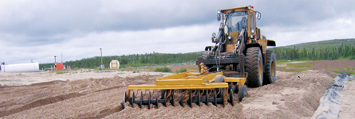

Module 5—Hydrocarbons and the Petroleum Industry
 Reflect and Connect
Reflect and Connect
Soil contaminated with hydrocarbons can be treated using bioremediation. Bacteria that commonly live in the soil use many hydrocarbons as a food source. These bacteria remove hydrocarbons from the soil by eating them.

© EBA Engineering Consultants Limited. Used with permission.
Because of the chemical structure of the benzene ring, soil contaminated with benzene compounds is much more difficult to bioremediate. The unique bonding relationship in a benzene ring makes benzene a highly stable chemical structure. Soil and other material contaminated with benzene and other harmful aromatic compounds are often treated using special waste treatment processes.
Reflect on the Big Picture
Benzene is currently a restricted chemical substance. Benzene and other aromatic compounds are found in crude oil and natural gas and can be separated during refining. Despite its link to cancer, benzene is used in many chemical processes.
Prepare a list of products that are produced using benzene. Research what alternatives exist to the use of benzene.
Save a copy of your list in your course folder—you might wish to refer to this list in Module 6.
 Module 5: Lesson 4 Assignment
Module 5: Lesson 4 Assignment
There is no Assignment for this lesson.